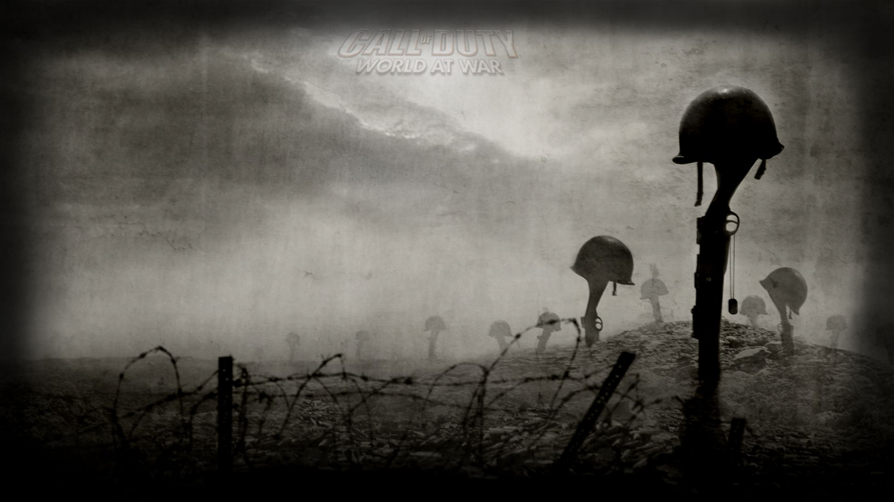
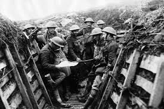
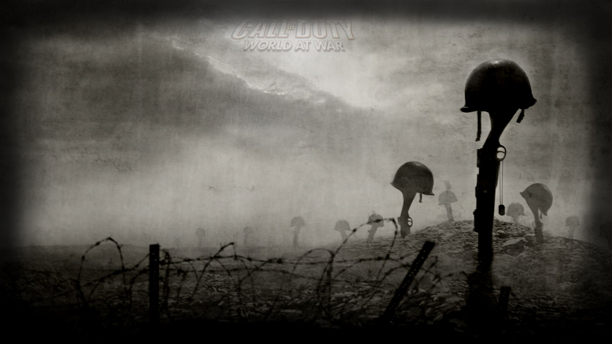
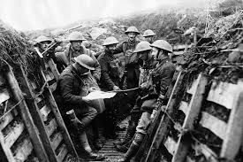

What was WWI
World War I, one of the most if not the most notorious wars known to man, also known as The Great War. Beginning in the year 1914, initiated by the assassination of the Archduke Franz Ferdinand of Austria. His death had catapulted into the now known Great War across Europe lasting until 1918. During the conflict, Germany, Austria-Hungary, Bulgaria and the Ottoman Empire made up the Central Powers which fought against The Allied Powers which consisted of the countries Great Britain, France, Russia, Italy, Romania, Japan and the United States. During this period there was a huge advancement in technology which led World War I to reach unknown levels of carnage and destruction. By the time the war had ended the Allied Powers claimed Victor , more than 16 million people (soldiers and civilians) died.
Pre-War
During the times tension had been brewing throughout Europe- especially in the southeast region of Europe. The spark which ignited the war happened in Sarajevo, Bosnia, where Archduke Franz Ferdinand, next in line to ruling the Austro-Hungarian Empire- was assassinated alongside his wife by a Serbian nationalist named Gavrilo Princip on June 28, 1914. A number of nationalists were unhappy with the Austro- Hungarian rule over Bosnia and Herzegovina. The Assassination of Franz Ferdinand set off a rapidly escalating chain of events. Several countries including Austria-Hungary had blamed the Serbian government for the attack and wanted to use the incident to seek justification for settling the question Serbian nationalism once and for all. Before any declaration of war begun countries need it to be clear who was on what side during the war. It was known that Russia supported Serbia, Austria – Hungary waited to declare war until leaders received assurance from the German leader Kaiser Wilhelm II That Germany would support their reasoning. Austro-Hungarian leaders had feared that the Russian’s would intervene and then that would lead to the involvement of their ally’s France and Great Britain.
World War I Begins
Since the Serbian government was convinced the Austria- Hungary was readying for war, the Serbian government ordered the Serbian army mobilize and appealed to Russia for assistance. On July 28, Austria- Hungary declared war on Serbia, and the tenuous peace between Europe’s great powers quickly collapsed. In the space of a week, Russia, Belgium, France, Great Britain and Serbia had lined up against Austria- Hungary and Germany, and World War I had begun.
The Western Front
Germany began fighting in the war o two fronts, invading France through the neutral Belgium in the west and confronting Russia in the east. This aggressive strategy was known as the Schlieffen Plan. August 4, 1914, German troops crossed the border into Belgium. During the first battle of the war, the Germans attacked the heavily fortified city Liege, the Germans attacked using their most powerful weapons in their arsenal, for example they used huge siege cannons to capture the city by August 15. After the attack the Germans left death and destruction as they worked their way through Belgium towards France, shooting several civilians and assassinating the Belgian priest they had accused of inciting civilian resistanceThe Battle of Marne
The battle of Marne lasted between September 6-9, 1914, the British and French forces confronted the invading Germany army, which had by then penetrated thoroughly into northeastern France. The troops of the Allied forces checked German advance and mounted a successful counterattack, forcing Germans to retreat to north of Aisne River. This defeat caused the failure to the quick victory plans the Germans had in France. Both sides dug into trenches, and the Western Front was the setting for a hell like war of attrition lasting over three years. The most expensive and battles which lasted a longer duration of time were fought at Verdun (February- December 1916) and the Battle of the Somme (July- November 1916). German and French troops suffered close to a million casualties in the Battle of Verdun alone.
Russian Turnover
From 1914 – 1916, Russia’s army had decided to create a number of offensives on the war’s Eastern Front, but was incapable to break through German lines Defeat on the battlefield, combined with economic instability and the scarcity of food and other essentials, led to mounting discontent among the bulk of Russia’s population, especially the poverty-stricken workers and peasants. This increased resentment was directed toward the imperial regime of Czar Nicholas II and his unpopular German wife Alexandra. Russia’s simmering instability detonated in the Russian Revolution of 1917, Leaded by Vladimir Lenin and the Bolsheviks, which ended czarist rule and brought a halt to Russian participation in World War I. Russia then reached a settlement with the Central Powers in beginning of December 1917, this gave German troops liberty to confront the remaining Allies on the Western Front.
America Enters War
At the occurrence of fighting in 1914, the United States lingered on the side-lines of World War I, embracing the policy of neutrality approved by President Woodrow Wilson while continuing to engage in commerce and shipping with European countries on both sides of the conflict. Neutrality, nevertheless, was increasingly difficult to uphold in the face of Germany’s unconstrained submarine aggression against neutral ships, containing those carrying passengers. In 1915, Germany stated the waters surrounding the British Isles to be a war zone, and German U-boats sunk numerous commercial and passenger vessels, including some U.S. ships.
Battle of the Isonzo
The Initial Battle of the Isonzo took place in the late spring of 1915, soon subsequently Italy’s arrival into the war on the Allied side. In the Twelfth Battle of the Isonzo, also known as the Battle of Caporetto (October 1917), German reinforcements aided Austria-Hungary win a decisive victory. After Caporetto, Italy’s allies accepted the offer to increase assistance. British and French—and later, American—troops arrived in the region, and the Allies began to take back the Italian Front.
Second Battle of the Marne
With Germany being capable to develop its strength on the Western Front after the armistice with Russia, Allied troops found it difficult to fend off another German offensive until assured reinforcements from the United States were able to get there. On July 15, 1918, German troops introduced what would become the final German offensive of the war, attacking French forces (joined by 85,000 American troops as well as some of the British Expeditionary Force) in the Second Battle of the Marne. The Allies effectively pushed back the German assault and launched their own counteroffensive just three days later. After suffering massive casualties, Germany was forced to call off a planned offensive further north, in the Flanders region stretching between France and Belgium, which was envisioned as Germany’s best hope of victory. The Second Battle of the Marne turned the tide of war decisively towards the Allies, who were able to regain much of France and Belgium in the months that followed.
Toward Armistice
By the fall of 1918, the Central Powers were collapsing on all fronts. Even With the Turkish victory at Gallipoli, later defeats by invading forces and an Arab rebellion that destroyed the Ottoman economy and ruined its land, and the Turks signed a treaty with the Allies in late October 1918. Austria-Hungary, disbanding from within due to increasing nationalist movements among its varied population, reached an armistice on November 4. Facing declining resources on the battlefield, discontent on the Homefront and the surrender of its allies, Germany was finally obliged to seek an armistice on November 11, 1918, ending World War I.
Treaty of Versailles
At the Paris Peace Conference in 1919, Allied leaders stated their desire to build a post-war world that would protect itself against potential conflicts of such damaging scale. Some promising participants had even begun calling World War I “the War to End All Wars.” But the Treaty of Versailles, signed on June 28, 1919, would not achieve that admirable goal. Burdened with war guilt, heavy damages and rejected entrance into the League of Nations, Germany felt conned into signing the treaty, having assumed any peace would be a “peace without victory,” as put into view by President Wilson in his famous Fourteen Points speech of January 1918. As the years passed, hatred of the Versailles treaty and its authors settled into a lingering bitterness in Germany that would, two decades later, be counted among the causes of World War II.
World War I Casualties
World War I caused the death of more than 9 million soldiers; 21 million more were wounded. Civilian casualties totalled close to 10 million. The two nations most involved were Germany and France, each of which sent some 80 percent of their male populations between the ages of 15 and 49 into battle.
Legacy of World War I
World War I brought about vast social upheaval, as millions of women joined the workforce to replace men who went to war and those who never returned. The first global war also helped to spread one of the world’s deadliest global pandemics, the Spanish flu epidemic of 1918, which led to the death of an estimated 20 to 50 million people. World War I have also been referred to as “the first modern war.” Many of the technologies now linked with military conflict—machine guns, tanks, aerial combat and radio communications—were introduced on a huge scale during World War I. The harsh effects that chemical weapons such as mustard gas and phosgene had on soldiers and civilians during World War I galvanized public and military attitudes against their continued use. The Geneva Convention agreements, signed in 1925, restricted the use of chemical and biological agents in warfare and remains in effect today.
 


